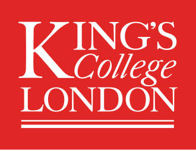
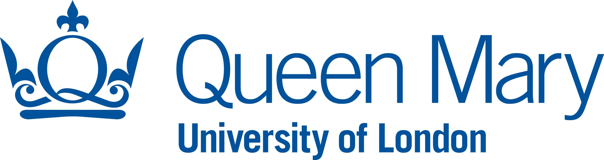
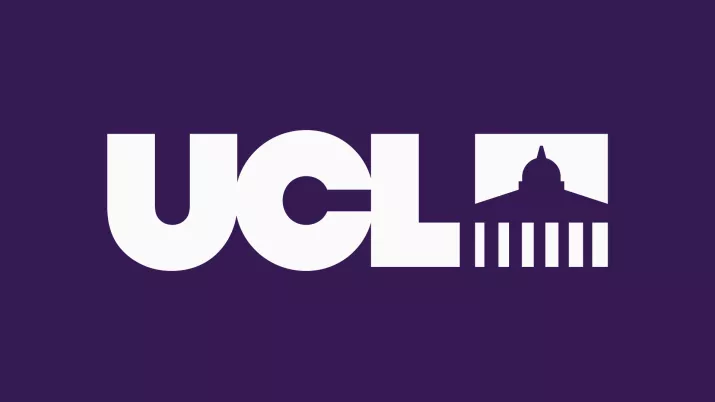
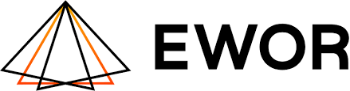
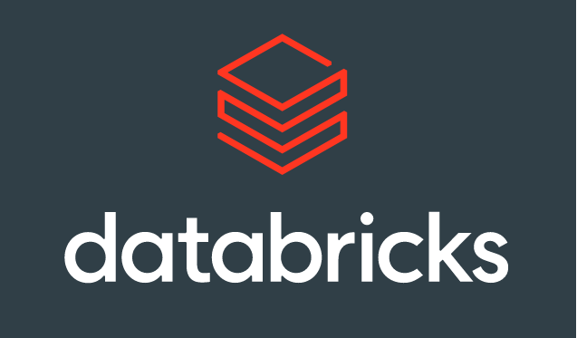

A research intelligence platform that turns fragmented women's health evidence into ranked, traceable decisions — built for scientists, not search engines.
Built by experts from leading institutions



The Problem
Women's health research is chronically underfunded, built on male-biased data, and fragmented across disciplines that rarely speak to each other. Conditions like endometriosis, PCOS, adenomyosis, and early gynaecological cancers affect hundreds of millions of women — yet produce few disease-modifying treatments and suffer decade-long diagnostic delays.
The evidence exists. It's just scattered, inconsistent, and nearly impossible to navigate without spending months doing it manually.
The Platform
Nexagen ingests the full women's health literature — starting with endometriosis: studies, trials, patents, and your own lab data. It returns ranked, traceable recommendations. No bioinformatics expertise required.
The Team


Get involved
We're working with a small group of researchers, diagnostics founders, and women's health biotech scientists to shape the platform. If you work across endometriosis, PCOS, adenomyosis, infertility, or early gynaecological cancers, we want to hear from you.